Index
| S.N. | Topic | Content wise marks | Working hours |
|---|---|---|---|
| 1 | Database management system | 8 | 12 |
| 2 | Data communication and networking | 9 | 15 |
| 3 | Web Tech – II | 8 | 12 |
| 4 | C Programming II | 8 | 12 |
| 5 | Object oriented programming | 6 | 10 |
| 6 | Software development life cycle | 6 | 10 |
| 7 | Recent Trends in technology | 5 | 9 |
| Total | 50 | 80 | |
Chapter 1: Database management system
Data vs Information
Data consists of raw facts and figures that by themselves do not carry meaning. These can be numbers, text, images, or sounds collected from various sources. Data alone cannot help in decision-making without interpretation. For example, a temperature reading of "30" is data until you know whether it's in Celsius or Fahrenheit, the location, or time.
Information is the processed form of data that is meaningful and useful. It results from organizing, structuring, or presenting data in context. For example, "The temperature in New York on June 15th was 30°C, which is higher than the average" is information because it adds context, making the data valuable for analysis or decisions.
Understanding the distinction is crucial for fields like data science, business intelligence, and database management where the goal is to convert raw data into actionable information.
Features of Information
- Accuracy: Information must be precise and error-free. Inaccurate information can lead to poor decisions or business losses.
- Timeliness: Information must be available when needed. Outdated information might be irrelevant or misleading.
- Relevance: The information should be applicable to the purpose it serves, ensuring it meets the needs of users or processes.
- Completeness: All necessary details should be present for the information to be fully understood and actionable.
- Consistency: Information should be consistent across different sources and over time to build trust and reliability.
- Understandability: Information should be presented clearly and understandably so that users can interpret it correctly.
- Accessibility: Authorized users should be able to easily access the information when needed without unnecessary hurdles.
Database and Its Purpose
A database is a collection of related data organized systematically to facilitate easy access, management, and updating. Databases enable users to store vast amounts of information securely and retrieve it quickly using query languages like SQL.
The primary purpose of a database is to support efficient data storage, retrieval, and manipulation, enabling applications to serve user needs effectively. Databases eliminate redundant data storage, provide data integrity, and support concurrent access by multiple users, which is essential in modern multi-user environments such as banking, e-commerce, and social networking.
For example, in an online store, a database maintains records of products, customers, orders, and payments, allowing seamless operations like searching products, placing orders, and tracking shipments.
Terminologies in Database
- Table: The basic unit of data storage in relational databases. Each table contains rows (records) and columns (fields), representing entities such as employees or products.
- Field: A column in a table, defining the data type and meaning of the data stored. For example, "Name," "Date of Birth," or "Price."
- Record: A row in a table representing a single entity instance, such as a specific employee or product entry.
- Tuple: Synonymous with a record, emphasizing its ordered structure in a table.
- Object: In object-oriented or object-relational databases, an object is a data entity encapsulating attributes and behaviors, representing real-world entities more naturally.
- Keys: Fields that uniquely identify records or establish relationships:
- Primary Key: A unique identifier for each record in a table (e.g., employee ID).
- Foreign Key: A field in one table that links to the primary key in another, establishing relational connections.
Data Dictionary
The data dictionary is an essential metadata repository in a database system that stores definitions, constraints, and structural information about data elements and their relationships. It acts as a blueprint, documenting the design and structure of the database to aid developers, DBAs, and users in understanding and managing the data.
It typically includes:
- Table names and descriptions
- Field names, data types, and allowed values
- Relationships and constraints between tables
- Access permissions and user roles
An accurate data dictionary is crucial for maintaining data integrity, consistency, and facilitating changes or upgrades in the database structure over time.
Database Management System (DBMS)
Introduction
A DBMS is a sophisticated software system that provides an interface to define, create, query, update, and administer databases. It abstracts the complexity of data storage and management from users, enabling efficient handling of large data volumes and concurrent multi-user access.
Popular DBMS examples include MySQL, Oracle, Microsoft SQL Server, and PostgreSQL, widely used in enterprise and web applications.
Objectives
- Provide a convenient and efficient environment for users to store and retrieve data.
- Ensure data integrity, security, and privacy.
- Enable concurrent multi-user access with transaction management.
- Provide backup, recovery, and fault tolerance mechanisms.
- Maintain data independence by separating physical and logical data structures.
Advantages
- Data Integrity: DBMS enforces rules to maintain accuracy and consistency of data.
- Security: Access controls restrict unauthorized data access and manipulation.
- Reduced Redundancy: Data normalization eliminates duplication, saving storage and improving consistency.
- Backup and Recovery: DBMS automates data backup and recovery, minimizing data loss risks.
- Multi-User Access: Supports concurrent access while preventing conflicts through locking and transactions.
Disadvantages
- Complexity: Setting up and managing a DBMS requires skilled personnel and planning.
- Cost: Licensing, hardware, and maintenance can be expensive.
- Performance Overhead: Additional layers of abstraction may impact speed compared to file-based systems.
- Single Point of Failure: Centralized DBMS can cause system-wide downtime if not designed with fault tolerance.
Types of Database Models
- Hierarchical Model:
Organizes data in a tree-like structure with parent-child relationships, where each child record has only one parent. This model is efficient for representing structured data like organizational charts, XML data, or file systems. However, its rigid hierarchy limits flexibility in representing complex relationships.
- Network Model:
Extends the hierarchical model by allowing multiple parent records, forming a graph structure. This many-to-many relationship model supports more complex real-world scenarios such as supply chains or telecommunications. Though flexible, network models are complex to design and manage.
- Relational Model:
The most widely used model today, it stores data in tables (relations) with rows and columns. Data relationships are established using keys, and operations are performed using relational algebra and SQL. This model offers simplicity, data independence, and flexibility, making it suitable for most business applications.
- Entity-Relationship Model:
Primarily used for database design, this conceptual model uses diagrams (ER diagrams) to illustrate entities, attributes, and relationships. It helps in visualizing and planning the database structure before implementation.
Integrity Constraints and Types
Integrity constraints enforce rules on data to ensure accuracy, consistency, and reliability in a database.
- Domain Constraint: Defines the permissible set of values for a column, such as data type restrictions, value ranges, or formats (e.g., a date field must be a valid date).
- Entity Integrity: Ensures that each table’s primary key is unique and not null, so every record is uniquely identifiable.
- Referential Integrity: Maintains valid relationships between tables by ensuring foreign keys correspond to existing primary keys. It prevents orphan records and maintains relational consistency.
- Key Constraints: Enforce uniqueness and correct usage of primary and foreign keys to maintain data consistency.
Normalization
Introduction
Normalization is a systematic approach of decomposing tables to minimize data redundancy and eliminate undesirable characteristics like update, insert, and delete anomalies. It improves data integrity and efficiency in relational databases by organizing data into multiple related tables.
Normalization follows several stages called normal forms, each with specific rules:
Normal Forms
- First Normal Form (1NF): Ensures that all table columns contain atomic, indivisible values, and there are no repeating groups or arrays within rows.
- Second Normal Form (2NF): Achieved when the table is in 1NF and all non-key attributes are fully functionally dependent on the entire primary key, removing partial dependencies.
- Third Normal Form (3NF): Reached when the table is in 2NF and all attributes are only dependent on the primary key, eliminating transitive dependencies.
Advantages of Normalization
- Eliminates redundant data, reducing storage needs.
- Ensures data consistency and accuracy.
- Makes the database easier to maintain and update.
- Improves query performance by structuring data efficiently.
Disadvantages of Normalization
- Increased number of tables can make queries more complex and slower due to joins.
- Over-normalization may result in performance bottlenecks.
- Sometimes denormalization is preferred for read-heavy applications to improve speed.
Centralized and Distributed Database
Introduction
Centralized Database systems store data in a single central location managed by one DBMS instance. All data access, processing, and administration occur on this central server.
Distributed Database systems distribute data across multiple physical locations, connected through a network but appear as a single database to users. This approach can enhance performance, fault tolerance, and scalability.
Advantages
- Centralized: Easier management, simplified backup, and strong data integrity due to centralized control.
- Distributed: Improved reliability (no single point of failure), better performance by localizing data access, and scalability by adding nodes.
Disadvantages
- Centralized: Potential bottlenecks and vulnerability to single points of failure.
- Distributed: Complex data synchronization, possible consistency issues, and higher maintenance costs.
Comparison
| Feature | Centralized Database | Distributed Database |
|---|---|---|
| Data Location | Stored in one place | Spread across multiple locations |
| Management Complexity | Simple | Complex |
| Fault Tolerance | Low (single point of failure) | High (redundant nodes) |
| Performance | Limited by server capability | Potentially higher through parallelism |
| Cost | Lower initial cost | Higher infrastructure and maintenance costs |
Database Security
Introduction
Database security involves protecting the database against unauthorized access, misuse, or theft. It is critical because databases often store sensitive information such as personal data, financial records, and proprietary business information.
Challenges
- Preventing unauthorized access from hackers or malicious insiders.
- Protecting against SQL injection and other cyber attacks.
- Maintaining privacy and compliance with regulations such as GDPR or HIPAA.
- Ensuring data availability despite threats like denial of service attacks.
Security Measures
- Authentication: Verifying user identities through passwords, biometrics, or tokens.
- Authorization: Granting appropriate access rights based on user roles.
- Encryption: Protecting data at rest and in transit using cryptographic techniques.
- Auditing: Keeping logs of access and modifications for accountability.
- Backup and Recovery: Regularly backing up data to recover from security breaches or data loss.
Roles of DBA (Database Administrator)
The DBA plays a crucial role in managing database security, performance, and availability. Key responsibilities include:
- Installing and configuring the DBMS software.
- Defining and enforcing security policies.
- Performing backup and recovery operations.
- Monitoring system performance and tuning databases.
- Managing user accounts, roles, and privileges.
- Ensuring data integrity and compliance with regulations.
Practical Topics: DDL and DML Languages
Data Definition Language (DDL) commands are used to define and modify database structures such as tables, indexes, and schemas. Common DDL commands include CREATE, ALTER, and DROP.
Data Manipulation Language (DML) commands are used to manipulate data stored within tables. These include INSERT, UPDATE, DELETE, and SELECT.
SQL Data Types
SQL supports various data types to define the nature and constraints of data stored in table fields:
- CHAR(size): Fixed-length character string. Useful for storing data with a fixed size, such as country codes.
- VARCHAR(size): Variable-length character string. Efficient for storing text with varying lengths, like names or emails.
- BINARY(size): Fixed-length binary data, used to store raw bytes.
- VARBINARY(size): Variable-length binary data.
- TINYBLOB: Very small binary large object (up to 255 bytes).
- TINYTEXT: Very small text data.
- TEXT: Large text data (up to 65,535 characters).
- LONGTEXT: Very large text data (up to 4GB).
- ENUM: A string object that can have one value chosen from a list of predefined values.
- BIT: Stores bit-field values.
- TINYINT: Very small integer (usually 1 byte).
- BOOLEAN: Stores true or false values (often implemented as TINYINT).
- INTEGER: Standard integer value.
- FLOAT: Floating-point number with single precision.
- DOUBLE: Floating-point number with double precision.
- DECIMAL(p,s): Fixed-point number with precision p and scale s, suitable for financial calculations.
- DATE: Stores calendar dates (year, month, day).
- DATETIME: Stores date and time values.
SQL JOINs Explained
In SQL, JOIN operations combine rows from two or more tables based on a related column between them. The main types of JOINs are:
- INNER JOIN
- LEFT JOIN (or LEFT OUTER JOIN)
- RIGHT JOIN (or RIGHT OUTER JOIN)
- FULL JOIN (or FULL OUTER JOIN)
Sample Tables
Consider the following two tables:
| EmployeeID | Name | DeptID |
|---|---|---|
| 1 | Alice | 10 |
| 2 | Bob | 20 |
| 3 | Charlie | 30 |
| 4 | David | null |
| DeptID | DeptName |
|---|---|
| 10 | HR |
| 20 | IT |
| 40 | Finance |
1. INNER JOIN
Returns only the rows where there is a match in both tables.
SELECT Employees.Name, Departments.DeptName
FROM Employees
INNER JOIN Departments ON Employees.DeptID = Departments.DeptID;
Result:
| Name | DeptName |
|---|---|
| Alice | HR |
| Bob | IT |
2. LEFT JOIN (LEFT OUTER JOIN)
Returns all rows from the left table (Employees), and matched rows from the right table (Departments). If no match, NULLs for the right table columns.
SELECT Employees.Name, Departments.DeptName
FROM Employees
LEFT JOIN Departments ON Employees.DeptID = Departments.DeptID;
Result:
| Name | DeptName |
|---|---|
| Alice | HR |
| Bob | IT |
| Charlie | null |
| David | null |
3. RIGHT JOIN (RIGHT OUTER JOIN)
Returns all rows from the right table (Departments), and matched rows from the left table (Employees). If no match, NULLs for the left table columns.
SELECT Employees.Name, Departments.DeptName
FROM Employees
RIGHT JOIN Departments ON Employees.DeptID = Departments.DeptID;
Result:
| Name | DeptName |
|---|---|
| Alice | HR |
| Bob | IT |
| null | Finance |
4. FULL JOIN (FULL OUTER JOIN)
Returns all rows when there is a match in one of the tables. Rows without a match in either table will contain NULLs in place of missing columns.
SELECT Employees.Name, Departments.DeptName
FROM Employees
FULL OUTER JOIN Departments ON Employees.DeptID = Departments.DeptID;
Result:
| Name | DeptName |
|---|---|
| Alice | HR |
| Bob | IT |
| Charlie | null |
| David | null |
| null | Finance |
DBMS Questions and Answers (2020-2024)
-
What is Database and DBMS? List out the advantages and disadvantages of DBMS.
A database is an organized collection of data. DBMS (Database Management System) is software that manages databases.
Advantages: Reduces data redundancy, ensures data integrity, supports multi-user access, enables backup and recovery.
Disadvantages: Expensive hardware/software, complex to manage, requires skilled personnel. -
Differentiate between file processing system and DBMS:
1. File system has data redundancy; DBMS reduces it.
2. File system is application-dependent; DBMS is independent.
3. File system has limited security; DBMS has better security.
4. File system lacks backup/recovery; DBMS supports both. -
Explain different models of DBMS with advantages and disadvantages:
- Hierarchical: Tree-like structure. Fast access but rigid.
- Network: Many-to-many relations. Flexible but complex.
- Relational: Uses tables. Easy to use and scalable but slower for complex data.
- Object-Oriented: Supports objects. Good for complex apps but less mature. -
What is a relational database? How is it different?
A relational database stores data in tables with rows and columns. It's different due to its use of primary/foreign keys and structured query language (SQL). -
What is data redundancy? How does DBMS help in reducing it?
Data redundancy is the duplication of data. DBMS reduces it by using normalization and shared access to a central database. -
Differentiate between centralized and distributed database systems:
- Centralized: Data stored in one location. Easier to manage but less fault-tolerant.
- Distributed: Data distributed over multiple locations. More reliable but complex. -
Who is DBA? Responsibilities?
DBA (Database Administrator) manages and maintains the database.
Responsibilities: Installation, configuration, backup, recovery, security, performance tuning. -
Define normalization. Explain 1NF, 2NF, 3NF:
Normalization is the process of organizing data to reduce redundancy.
- 1NF: No repeating groups. Example: Separate multiple phone numbers into rows.
- 2NF: Remove partial dependencies. Every non-key attribute depends on whole primary key.
- 3NF: Remove transitive dependencies. Non-key attributes should not depend on other non-key attributes. -
Explain primary key, foreign key, candidate key:
- Primary key: Unique identifier (e.g., StudentID).
- Foreign key: Refers to primary key in another table.
- Candidate key: All possible keys that can become primary. -
What is SQL? Explain components and functions:
SQL (Structured Query Language) is used to interact with databases.
- Components: DDL, DML, DCL, TCL.
- Functions: SELECT, INSERT, UPDATE, DELETE, JOINs, etc. -
Define the following terms:
- Data Dictionary: Metadata about database structure.
- Primary Key: Unique column identifying a record.
- Relationship: Association between tables using keys.
- DML: Data Manipulation Language (e.g., SELECT, INSERT).
- SQL: Language to manage and query databases.
- Data Integrity: Accuracy and consistency of data.
- DDL: Data Definition Language (e.g., CREATE, ALTER).
- Data Security: Protecting data from unauthorized access.
- Database System: The database + DBMS software + users + applications.
SQL Code Example with Database and Multiple Insertions
Create the table
CREATE TABLE students (
Id INT PRIMARY KEY,
Name VARCHAR(50),
Class VARCHAR(20),
Marks INT
);
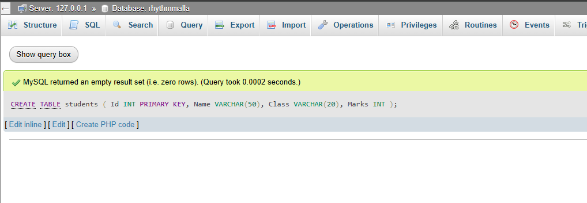
Insert records into the table
INSERT INTO students VALUES (1, 'Anita', 'XI', 78);
INSERT INTO students VALUES (2, 'Sita', 'XI', 83);
INSERT INTO students VALUES (3, 'Bikash', 'XI', 67);
INSERT INTO students VALUES (4, 'Prakash', 'XI', 90);
INSERT INTO students VALUES (5, 'Laxmi', 'XI', 75);
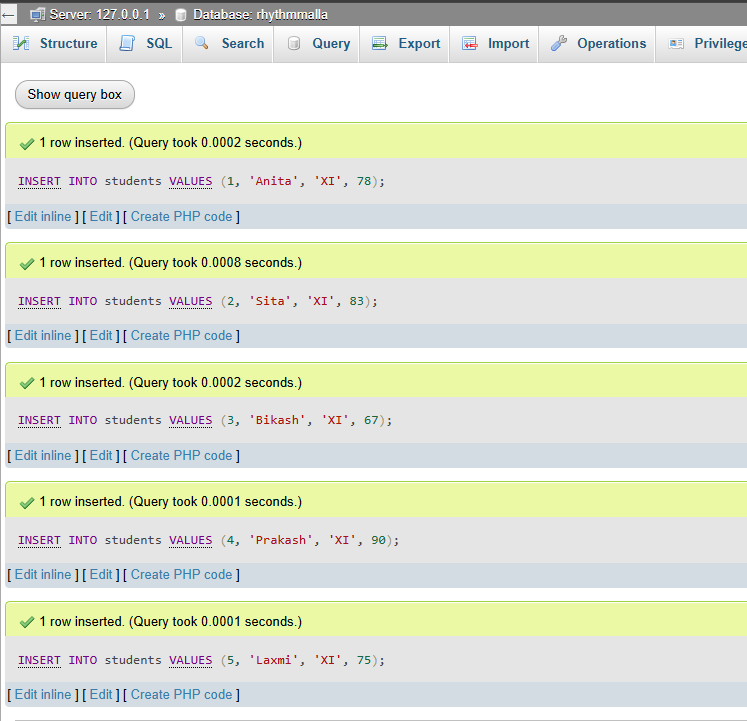
Display all records
SELECT * FROM students;
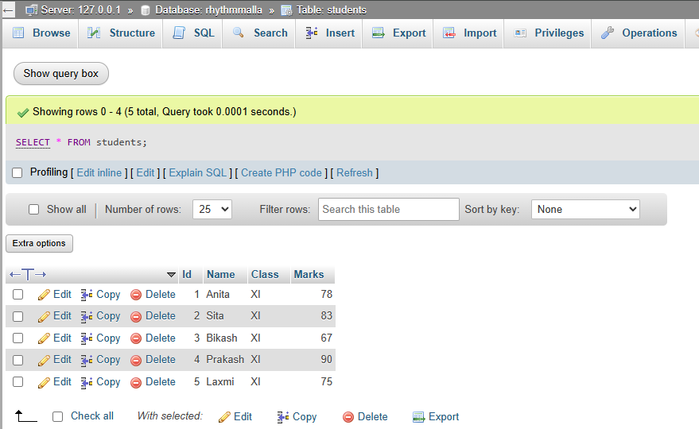
Update marks of student named 'Anita'
UPDATE students SET Marks = 85 WHERE Name = 'Anita';
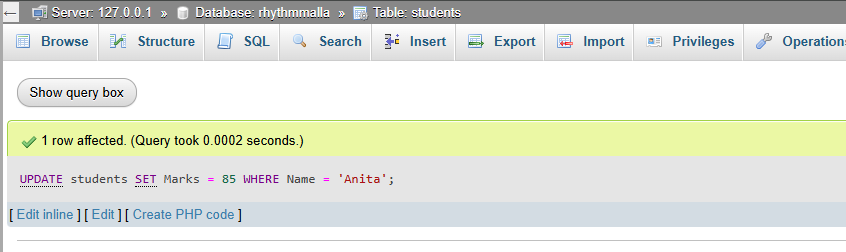
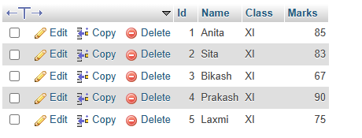
Delete record of student with id = 3
DELETE FROM students WHERE Id = 3;Unit 2 – C Programming
-
Working with a function:
- Define function: A function is a block of code that performs a specific task and can be reused.
- Syntax of functions:
return_type function_name(parameters) { //code } - Types of functions:
- Library Functions: Predefined (e.g.,printf(),scanf())
- User Defined Functions: Created by users for specific tasks - Components of function:
- Function prototype: Declaration (e.g.,
int add(int, int);) - Function call: Usage (e.g.,
add(2, 3);) - Function definition: Body (e.g.,
int add(int a, int b) { return a + b; }) - Return type: Specifies what type of value function returns (e.g.,
int,void)
- Function prototype: Declaration (e.g.,
-
Variable and Its Scope in C Programming
In C programming, the scope of a variable determines where that variable is accessible within the code. There are two primary scopes for variables:
1. Local Variables
Local variables are declared inside a function or a block and can only be accessed within that function or block. They are created when the function is called and destroyed when the function exits.
void func() { int localVar = 10; // Local variable printf("%d\n", localVar); }Here,
localVaris accessible only insidefunc(). Trying to use it outside the function will cause an error.2. Global Variables
Global variables are declared outside all functions, usually at the top of the program file. They can be accessed and modified by any function within the file.
int globalVar = 20; // Global variable void func() { printf("%d\n", globalVar); // Access global variable } int main() { func(); return 0; }Global variables exist for the lifetime of the program and are visible to all functions after their declaration.
-
Categories of function with example:
- Function with return type but no arguments:
#include <stdio.h> int getValue() { int value = 42; printf("Inside getValue function...\n"); return value; } int main() { printf("Calling getValue()...\n"); int result = getValue(); printf("The value is: %d\n", result); printf("Executed by Rhythm Malla 948\n"); return 0; }
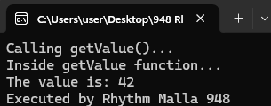
- Function with return type with arguments:
#include <stdio.h> int multiply(int a, int b) { printf("Multiplying %d and %d...\n", a, b); int product = a * b; return product; } int main() { int x = 6, y = 7; printf("Calling multiply(%d, %d)...\n", x, y); int result = multiply(x, y); printf("Product: %d\n", result); printf("Executed by Rhythm Malla 948\n"); return 0; } 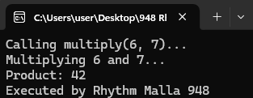
- Function with no return type with no arguments:
#include <stdio.h> void greet() { printf("Welcome to C Programming!\n"); printf("This is a simple greeting message.\n"); } int main() { printf("Calling greet()...\n"); greet(); printf("greet() function executed.\n"); printf("Executed by Rhythm Malla 948\n"); return 0; } 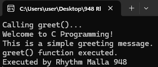
- Function with no return type with arguments:
#include <stdio.h> void displaySum(int x, int y) { int sum = x + y; printf("Calculating sum of %d and %d...\n", x, y); printf("The sum is: %d\n", sum); } int main() { int a = 12, b = 8; printf("Calling displaySum(%d, %d)...\n", a, b); displaySum(a, b); printf("Executed by Rhythm Malla 948\n"); return 0; }
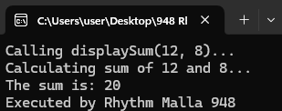
- Function with return type but no arguments:
-
Storage classes:
In C, storage classes define the scope (visibility) and lifetime of variables and/or functions within a C Program. The four types of storage classes are:
- Automatic: Default for all local variables. Declared inside a block or function. Keyword:
auto. - External: Used to declare global variables accessible across multiple files. Keyword:
extern. - Register: Stores variables in CPU registers for faster access. Keyword:
register. - Static: Retains the value of a variable across function calls. Keyword:
static.
#include <stdio.h> int globalVar = 100; // external storage void demoStatic() { static int counter = 0; counter++; printf("Static counter: %d\n", counter); } void demoRegister() { register int speed = 20; printf("Register speed: %d\n", speed); } void demoAuto() { auto int localValue = 10; printf("Automatic variable: %d\n", localValue); } int main() { printf("Global variable: %d\n", globalVar); demoStatic(); demoStatic(); demoRegister(); demoAuto(); printf("Executed by Rhythm Malla 948\n"); return 0; }
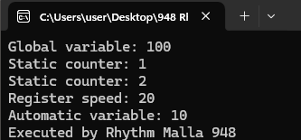
- Automatic: Default for all local variables. Declared inside a block or function. Keyword:
-
Recursive function with syntax and examples:
Syntax:
return_type function_name(parameters) { if (base_condition) { return base_value; } else { return recursive_case; } }Example:
#include <stdio.h> int factorial(int n) { if(n <= 1) { return 1; } else { return n * factorial(n - 1); } } int main() { int number = 5; printf("Finding factorial of %d...\n", number); int result = factorial(number); printf("Factorial of %d is %d\n", number, result); printf("Executed by Rhythm Malla 948\n"); return 0; }Advantages and Disadvantages of Recursive Functions
Advantages
- Simpler and Cleaner Code: Recursion can make complex problems easier to solve and understand by breaking them down into smaller subproblems.
- Elegant Solutions for Problems with Recursive Structure: Problems like tree traversals, factorial calculation, and the Fibonacci sequence are naturally suited for recursion.
- Reduces Code Size: Recursive solutions often require fewer lines of code compared to iterative solutions.
Disadvantages
- Higher Memory Usage: Each recursive call adds a new layer to the call stack, which can lead to increased memory consumption.
- Slower Performance: Recursive functions may be less efficient due to the overhead of multiple function calls.
- Risk of Stack Overflow: Deep or infinite recursion can exhaust the call stack, causing the program to crash.
- Sometimes Harder to Debug: Tracing recursive calls can be challenging, especially if the recursion is complex or not well understood.
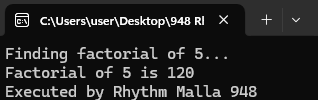
-
Demonstration of passing array to a function:
The following program demonstrates passing an array to a function, calculating the average of the elements:
#include <stdio.h> float calculateAverage(int arr[], int size) { int sum = 0; for (int i = 0; i < size; i++) { sum += arr[i]; } return (float)sum / size; } int main() { int numbers[] = {10, 20, 30, 40, 50}; int size = sizeof(numbers) / sizeof(numbers[0]); printf("Passing array to function...\n"); float avg = calculateAverage(numbers, size); printf("Average = %.2f\n", avg); printf("Executed by Rhythm Malla 948\n"); return 0; }
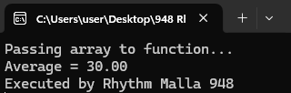
Structure and Union in C Programming
Structure
Introduction and Syntax
A structure in C is a user-defined data type that groups different variables under one name. It allows combining data items of different kinds.
struct StructureName {
data_type member1;
data_type member2;
// more members
};Structure Size
The size of a structure is at least the sum of the sizes of its members. However, padding may be added by the compiler for alignment purposes.
Accessing Members of Structure
struct Point {
int x;
int y;
};
int main() {
struct Point p1;
p1.x = 10;
p1.y = 20;
printf("X = %d, Y = %d\n", p1.x, p1.y);
return 0;
}Nested Structure
struct Date {
int day;
int month;
int year;
};
struct Student {
char name[50];
struct Date dob; // Nested structure
};
int main() {
struct Student s1 = { "Alice", {15, 8, 2000} };
printf("Name: %s, DOB: %d/%d/%d\n", s1.name, s1.dob.day, s1.dob.month, s1.dob.year);
return 0;
}Array of Structure
struct Point {
int x;
int y;
};
int main() {
struct Point points[3] = {{1,2}, {3,4}, {5,6}};
for(int i = 0; i < 3; i++) {
printf("Point %d: (%d, %d)\n", i+1, points[i].x, points[i].y);
}
return 0;
}Passing Structure to Function
struct Point {
int x;
int y;
};
void printPoint(struct Point p) {
printf("Point: (%d, %d)\n", p.x, p.y);
}
int main() {
struct Point p1 = {10, 20};
printPoint(p1);
return 0;
}Union
Introduction and Syntax
A union is similar to a structure but shares the same memory location for all its members. Only one member can contain a value at a time.
union UnionName {
data_type member1;
data_type member2;
// more members
};Comparison between Structure and Union
| Feature | Structure | Union |
|---|---|---|
| Memory Allocation | Allocates separate memory for each member. | All members share the same memory location. |
| Size | Sum of sizes of all members (plus padding). | Size of the largest member. |
| Usage | Stores multiple values simultaneously. | Stores one value at a time. |
| Access | All members can be accessed independently. | Only one member can hold a valid value at a time. |
| Typical Use Cases | When grouping related data of different types. | When saving memory and storing one of several possible values. |
Pointers in C Programming
Introduction and Syntax
A pointer is a variable that stores the memory address of another variable. It "points" to the location in memory where the data is stored.
data_type *pointer_name;Example:
int *p;Usage and Working
Pointers are used for dynamic memory allocation, arrays, strings, and to efficiently pass large structures or arrays to functions.
They allow indirect access to variables and enable functions to modify variables outside their scope.
Concept of Value and Address
- Value: The actual data stored in a variable.
- Address: The location in memory where the data is stored.
Example:
int a = 10;
int *p = &a; // &a gives the address of variable a
printf("Value of a = %d\n", *p); // Dereferencing pointer to get value
printf("Address of a = %p\n", p); // Printing address stored in pointerDeclaration and Initialization
int a = 5;
int *p = &a; // p holds address of aPointer and Function
Passing pointers to functions allows modifying the actual variables.
void increment(int *ptr) {
(*ptr)++; // Increment the value at the address ptr points to
}
int main() {
int num = 10;
increment(&num);
printf("Incremented value: %d\n", num); // Outputs 11
return 0;
}Call by Reference
Call by reference passes the address of a variable to the function, allowing it to modify the original variable.
void swap(int *x, int *y) {
int temp = *x;
*x = *y;
*y = temp;
}
int main() {
int a = 5, b = 10;
swap(&a, &b);
printf("a = %d, b = %d\n", a, b); // Outputs: a = 10, b = 5
return 0;
}Comparison between Call by Value and Call by Reference
| Feature | Call by Value | Call by Reference |
|---|---|---|
| Parameter Passing | Copies the value of the argument to the parameter. | Passes the address of the argument. |
| Effect on Original Variable | Original variable is not modified. | Original variable can be modified. |
| Memory Usage | Uses extra memory to copy values. | More efficient as no copying is done. |
| Use Case | When original data should remain unchanged. | When function needs to modify caller’s data. |
Pointer with Arrays
Arrays and pointers are closely related in C. The name of an array acts like a pointer to its first element.
int arr[3] = {10, 20, 30};
int *p = arr; // Points to arr[0]
for(int i = 0; i < 3; i++) {
printf("%d ", *(p + i)); // Access array elements using pointer arithmetic
}
// Output: 10 20 30Advantages and Disadvantages
Advantages
- Efficient access to memory and arrays.
- Allows dynamic memory management.
- Enables functions to modify variables by reference.
- Useful in implementing complex data structures (linked lists, trees).
Disadvantages
- Complex syntax can be confusing for beginners.
- Incorrect pointer use can cause runtime errors and crashes.
- Poor pointer management may lead to memory leaks.
- Debugging pointer-related bugs is often difficult.
File Handling in C Programming
Concept of Data File
A data file is a collection of related data stored on a secondary storage device such as a hard drive. Files allow data to be stored permanently and retrieved later.
Need for File Handling
File handling allows programs to:
- Store data permanently beyond the lifetime of a program.
- Read data from or write data to files for later use.
- Manage large amounts of data efficiently.
- Share data between different programs.
Sequential and Random Files
- Sequential Files: Data is processed in a linear sequence, one record after another from beginning to end.
- Random (Direct) Files: Data can be accessed at any location directly without reading through all preceding data.
File Handling Functions
Below are common file handling functions in C, along with their purpose and syntax:
1. fopen() and fclose()
fopen() opens a file and returns a pointer to a FILE object. fclose() closes the file.
FILE *fopen(const char *filename, const char *mode);
int fclose(FILE *stream);Modes example: "r" (read), "w" (write), "a" (append), "rb" (read binary), etc.
2. getc() and putc()
Read and write a single character to/from a file.
int getc(FILE *stream);
int putc(int char, FILE *stream);3. fprintf() and fscanf()
Formatted output/input to/from a file, similar to printf and scanf.
int fprintf(FILE *stream, const char *format, ...);
int fscanf(FILE *stream, const char *format, ...);4. getw() and putw()
Read and write an integer from/to a file (note: not portable, use with caution).
int getw(FILE *stream);
int putw(int w, FILE *stream);5. fgets() and fputs()
Read/write a string (line) from/to a file.
char *fgets(char *str, int n, FILE *stream);
int fputs(const char *str, FILE *stream);6. fread() and fwrite()
Read/write blocks of data (binary) from/to a file.
size_t fread(void *ptr, size_t size, size_t nmemb, FILE *stream);
size_t fwrite(const void *ptr, size_t size, size_t nmemb, FILE *stream);7. remove() and rename()
Delete or rename a file.
int remove(const char *filename);
int rename(const char *oldname, const char *newname);Random Access Functions
These functions allow manipulating the file position indicator for random access to files:
fseek()
Sets the file position to a specific location.
int fseek(FILE *stream, long int offset, int origin);Parameters:
offset: Number of bytes to move the position indicator.origin: Position from which offset is added. It can be:SEEK_SET- Beginning of fileSEEK_CUR- Current positionSEEK_END- End of file
rewind()
Sets the file position to the beginning of the file (equivalent to fseek(stream, 0, SEEK_SET)).
void rewind(FILE *stream);ftell()
Returns the current position of the file pointer.
long int ftell(FILE *stream);File Opening Modes in C
Read Modes
r: Opens a file for reading. The file must exist.r+: Opens a file for both reading and writing. The file must exist.
Write Modes
w: Opens a file for writing. If the file exists, its content is erased. If the file does not exist, it is created.w+: Opens a file for both reading and writing. If the file exists, it is truncated. Otherwise, a new file is created.
Append Modes
a: Opens a file for writing in append mode. Data is added at the end of the file. If the file does not exist, it is created.a+: Opens a file for both reading and writing in append mode. Writes are always at the end, but reading can be anywhere. Creates file if it does not exist.
Steps to Work with Files in C
- Define a File Pointer: Declare a variable of type
FILE *. - Open the File with Required Mode: Use
fopen()to open the file. - Perform Read, Write, or Append Operations: Use appropriate functions like
fgetc(),fputc(),fread(),fwrite(), etc. - Close the File: Use
fclose()to close the file and free resources.
Reading Data from Files
Use functions like fgetc(), fgets(), fread(), or fscanf() to read data from files.
Writing Data to Files
Use functions like fputc(), fputs(), fwrite(), or fprintf() to write data to files.
Appending Data to Files
Open the file in append mode (a or a+) to add data at the end without overwriting existing content.
End of File (EOF)
EOF is a macro defined in stdio.h indicating the end of a file. Reading functions return EOF when the end is reached.
int ch;
while ((ch = fgetc(filePtr)) != EOF) {
putchar(ch);
}typedef Keyword in C
typedef allows you to create new names (aliases) for existing data types, making code more readable and easier to manage.
typedef unsigned int uint;
uint age = 25;It is commonly used to simplify complex types such as structures:
typedef struct {
int x;
int y;
} Point;
Point p1 = {10, 20};